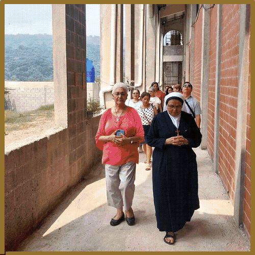

Un lugar para el silencio
Te invitamos a realizar el recorrido virtual del interior del Templo
Cuadro de San Juan Pablo II y Reliquia de primer Grado

Cuadro de San Romero y Reliquia de Primer Grado

La pintura tiene un pensamiento del Cardenal Gregorio Rosa Chávez hacia el amigo Romero:
"Amado monseñor Romero, pastor y mártir nuestro, nunca olvidaremos la homilía de tu vida"
Cuadro de San Maximiliano Kolbe y Reliquia de Primer Grado

La pintura tiene un pensamiento de Madre Reina Angélica Zelaya, hacia el Padre Kolbe:
"Maximiliano Kolbe, enamorado de la Virgen María, en un acto heroico de misericordia diste la vida por el prójimo"
Cuadro de Santa Faustina y Reliquia de Primer Grado

Pasillo de la Misericordia

Recorrido para la veneración de la imagen de Jesús Misericordioso